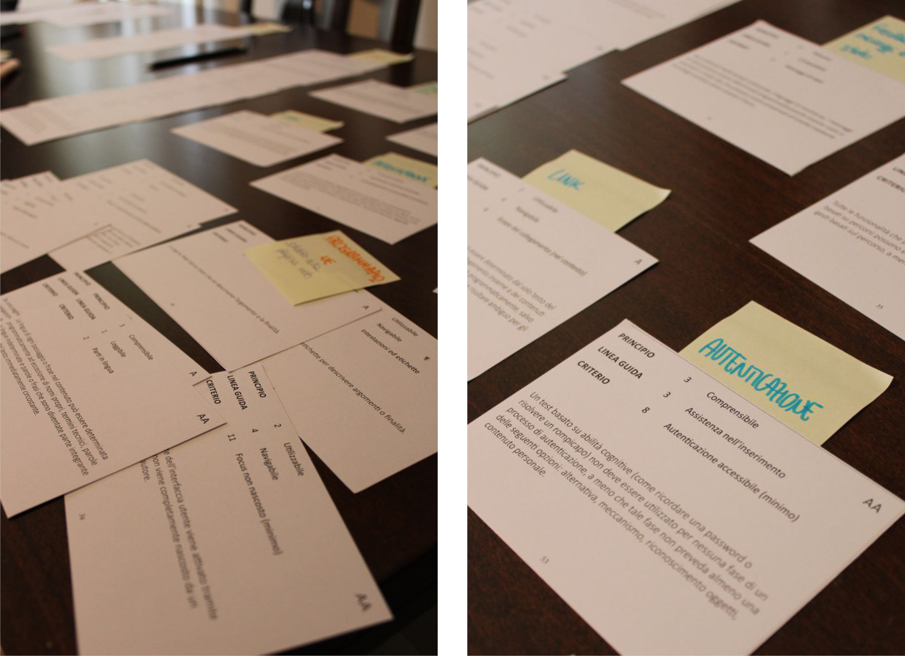
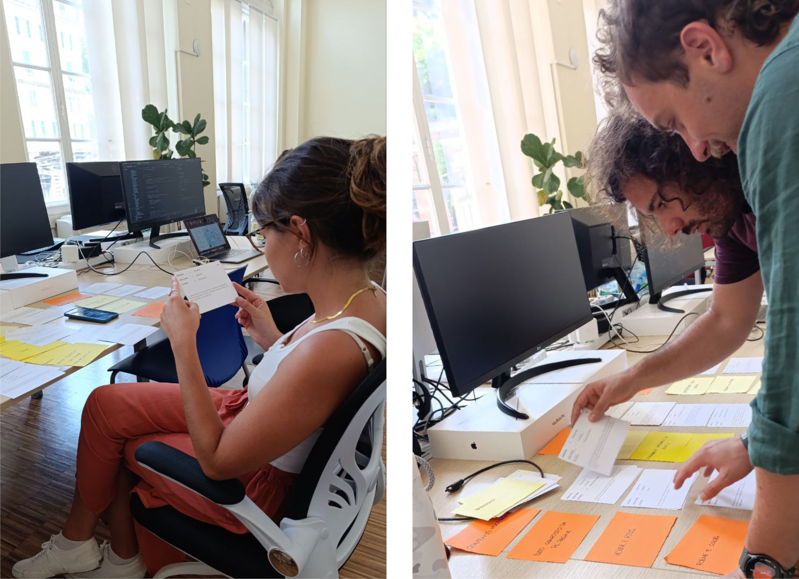
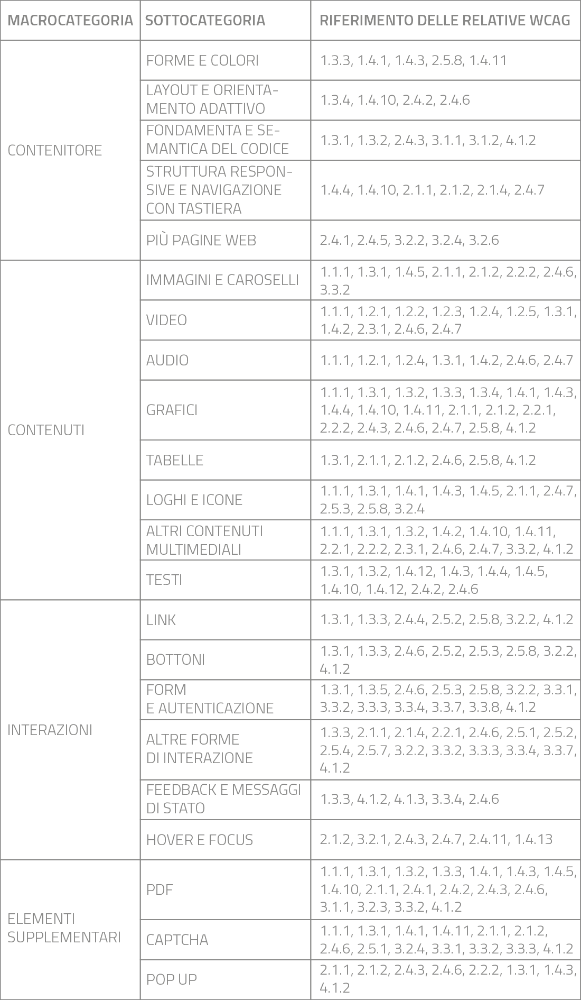
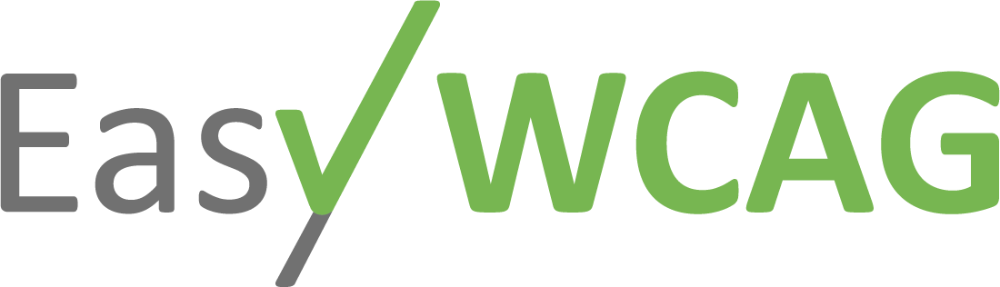
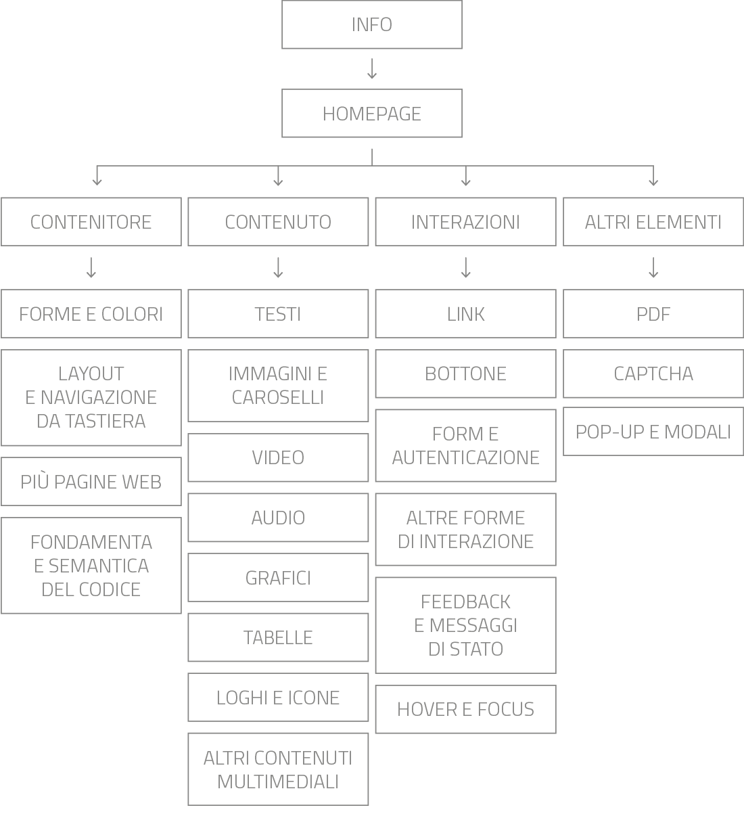
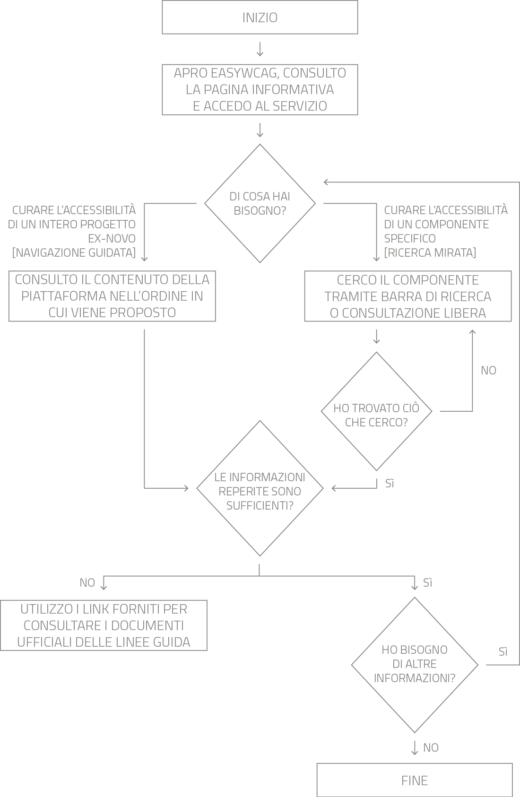
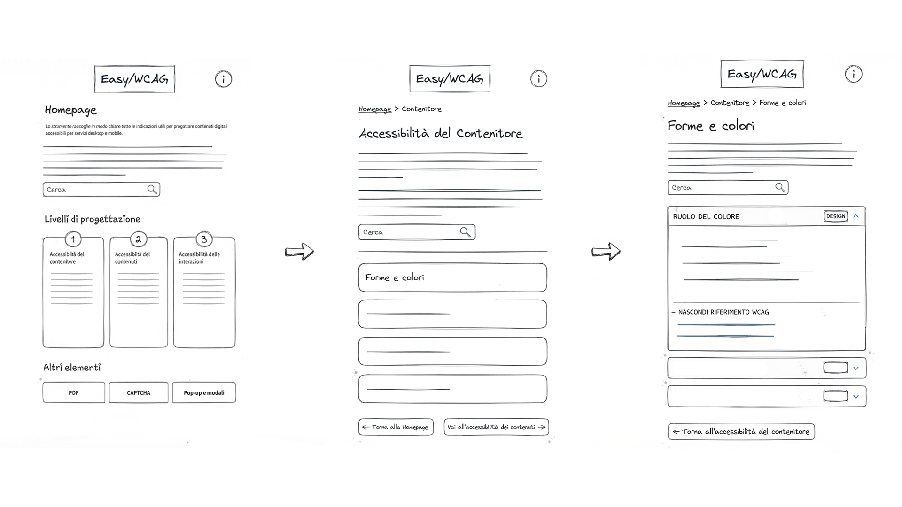

Designing for compliance
PhD in Design for Digital Inclusion: transforming regulatory complexity into an operational design ecosystem.
The Context & The Challenge
Official web accessibility guidelines (WCAG) are traditionally structured as dense, highly technical compendiums geared toward legal interpretation rather than digital product engineering. Consequently, organizations encounter severe operational friction, exposing themselves to risks of regulatory non-compliance and disproportionate remediation costs when compliance discrepancies emerge post-development.
EasyWCAG originates from this strategic gap, developed during my PhD in Design for Digital Inclusion in collaboration with a specialized software house. The initiative bridges academic rigor with enterprise requirements, transforming a rigid compliance obligation into an efficient operational framework that drives concrete organizational value across three core dimensions:
- Operational efficiency: reduction of interpretation times and direct integration into daily UI/UX and development pipelines.
- Economic optimization: mitigation of regulatory non-compliance risks and prevention of expensive post-development remediation.
- Cultural alignment: promotion of a shared, cross-functional language between designers, developers, and institutional stakeholders.
Through an integrated methodological framework, I directed the comprehensive synthesis and taxonomic restructuring of the regulatory corpus, converting complex standards into a streamlined operational design ecosystem.
Research & Methodology
The research architecture originated from Card Sorting sessions and a bottom-up analysis focusing on the 55 compliance criteria (levels A and AA), which are legally mandatory and binding for interface compliance. Although the traditional backbone of WCAG rests on four theoretical pillars (Perceivable, Operable, Understandable, Robust), I chose to move past this academic catalogation in favor of a user-centered perspective geared toward IT workflows, co-designed through targeted participatory design sessions with stakeholders and industry experts.


In parallel, I implemented a top-down structural analysis to map regulatory requirements onto the web's three core architectural dimensions: container, content, and interactions (integrated by related supplement modules). This framework defines a fluid taxonomy that seamlessly integrates into modern software development pipelines, cleanly decoupling design responsibilities from engineering ones.

Design & Development
I personally governed the entire product lifecycle through a tailored, rigorous approach: from preliminary investigation and strategic setup through visual execution, technical development, and empirical fieldwork validation, engaging users strictly during participatory co-design sessions.
Visual Identity & Brand Architecture:
Logo conceptualization required defining a clean, striking visual aesthetic capable of instantly communicating the values of universal accessibility, transparency, and institutional authority inherent to EasyWCAG.

Information Architecture & User Flows:
Before writing the first line of code, I structured the platform's information architecture. The artifacts below show the logical sitemap and user flow mapping, designed to minimize cognitive friction and optimize criteria retrieval.


Wireframe & Interface Evolution:
The wireframing phase translated the core architecture into tangible interface layouts. Below is the wireframe illustrating the 3 levels of navigation of the EasyWCAG app, designed before moving on to prototyping.

Functional Prototype and Implementation
I conceived, designed, and fully developed the web application independently, directly writing the HTML and CSS code to translate strategic concepts into a fully functioning, high-performing, and accessible digital artifact. In the box below, you can interact directly with the EasyWCAG web app exactly as I conceived, structured, and coded it:
The execution demonstrates how attention to every single phase of the process—from theoretical research to front-end engineering—allows for the release of an excellence-driven digital product, capable of addressing the actual pain points of digital professionals with millimetric precision.
Validation and Empirical Results
To validate the heuristic and ergonomic efficacy of the tool, I implemented a rigorous empirical testing protocol involving a panel of 10 UI/UX designers and 10 front-end developers, undergoing comparative sessions between consulting institutional repositories and using EasyWCAG. The recorded quantitative and qualitative data outline clear success metrics:
- Operational efficiency: 95% of the sample experienced a drastic acceleration in search and decoding times for individual regulatory parameters.
- Cognitive load mitigation: 80% of participants favorably validated role-based profiling filters (a sharp distinction between design and development needs).
- Taxonomic efficacy: 95% judged the structure by architectural dimensions (container, content, interactions) to be perfectly mirroring the mental models of contemporary digital workflows.
Analysis and feedback from empirical tests
The evidence gathered during the validation phase offers an unambiguous reading of EasyWCAG's impact on daily professional practice. The charts below summarize the panel's evaluations in terms of usage preference, taxonomic clarity, terminological adherence, and the effectiveness of targeted support for different technical profiles.
Ultimately, EasyWCAG goes beyond the concept of a mere regulatory compendium to elevate itself to an interdisciplinary connecting framework. The project demonstrates how strategic design based on radical content curation can convert a bureaucratic requirement into a formidable accelerator of technical quality and creative value.
Within my journey, EasyWCAG stands as a manifesto of my design vision: the ability to oversee the entire lifecycle of a digital product—from academic research and information architecture to advanced prototyping and front-end engineering. This work reflects my deep dedication to digital inclusion and ethical accessibility, highlighting a solid mastery of complex methodologies and a natural aptitude for strategic, multidisciplinary coordination.